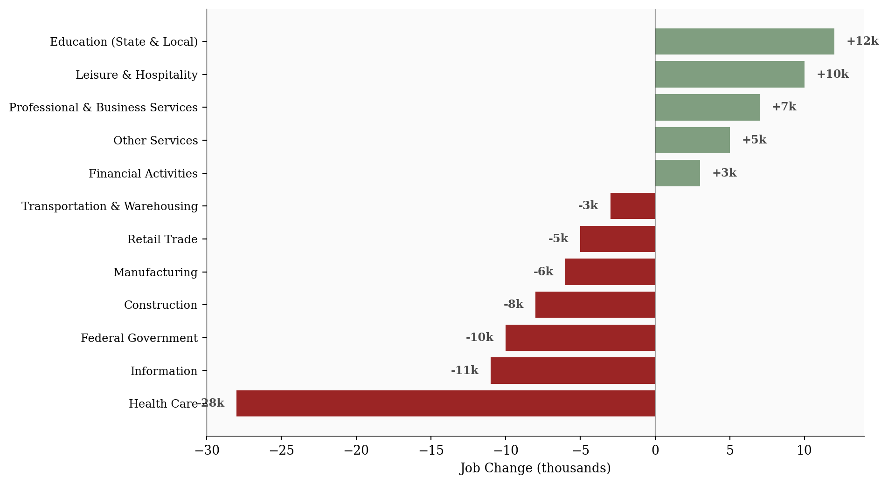
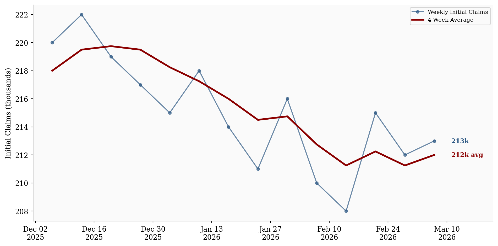
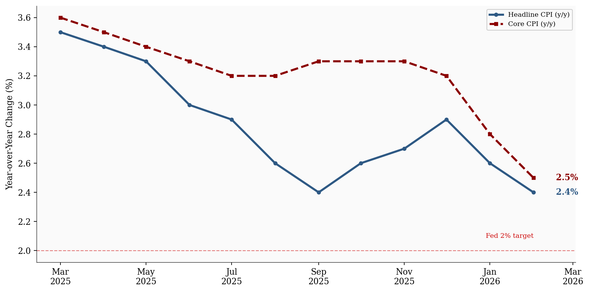

-92,000
Nonfarm Payrolls
4.4%
Unemployment Rate
213,000
Initial Claims
2.5%
Core CPI (y/y)
Data as of February 2026 | Source: Bureau of Labor Statistics, Department of Labor
Weak payrolls, low claims, and sticky inflation paint a picture of uneven cooling, not collapse.
March 15, 2026
Last week delivered three economic releases that, at the headline level, seemed to contradict each other. Nonfarm payrolls fell by -92,000 in February 2026. Initial jobless claims held at 213,000, near historically low levels. And core CPI came in at 2.5% year-over-year, still above the Fed’s 2% target. Weak hiring, no layoffs, sticky prices. The data look contradictory only at the headline level. Taken together, the releases suggest a labor market that is cooling through slower hiring rather than rising layoffs, while inflation remains stubbornly elevated. The cleaner interpretation is not collapse. It is uneven cooling.
All figures in this post are drawn from official releases: the BLS Employment Situation (March 6, 2026), the BLS CPI Summary (March 11, 2026), and the Department of Labor Weekly Claims Report (March 12, 2026). Sector-level payroll changes are from the BLS detailed tables. Weekly claims data reflects seasonally adjusted figures.
Data as of February 2026 | Source: Bureau of Labor Statistics, Department of Labor
A -92,000 payroll print is weak by any standard. But the composition matters more than the headline.
The sector-level breakdown reveals that the weakness was concentrated, not broad. Health care, typically the most reliable source of job growth, declined by 28,000, with strike activity contributing to the drop. The information sector lost 11,000, extending a multi-month pattern of restructuring. Federal government employment fell by 10,000 as workforce reductions continued.
# =============================================================================
# Sector-Level Payroll Changes: Horizontal Bar Chart
# =============================================================================
df_sec = df_payrolls.sort_values('change', ascending=True).copy()
fig, ax = plt.subplots(figsize=(10, 5.5))
bar_colors = [COLORS['positive'] if v >= 0 else COLORS['negative'] for v in df_sec['change']]
bars = ax.barh(range(len(df_sec)), df_sec['change'] / 1000, color=bar_colors, alpha=0.85)
# Direct value labels
for i, (val, bar) in enumerate(zip(df_sec['change'], bars)):
label = f"{val / 1000:+.0f}k"
offset = 0.8 if val >= 0 else -0.8
ha = 'left' if val >= 0 else 'right'
ax.text(val / 1000 + offset, i, label, va='center', ha=ha, fontsize=9,
fontweight='bold', color=COLORS['neutral'])
ax.set_yticks(range(len(df_sec)))
ax.set_yticklabels(df_sec['sector'], fontsize=9)
ax.set_xlabel('Job Change (thousands)')
ax.axvline(x=0, color=COLORS['neutral'], linewidth=0.8, alpha=0.5)
plt.tight_layout()
plt.show()
The sectors still adding jobs (leisure and hospitality, education, professional services) are doing so modestly. A payroll miss driven by concentrated sector weakness tells a fundamentally different story than one driven by synchronized contraction across the economy.
If the labor market were truly breaking, jobless claims would be rising. They are not.
Initial claims for the week ending March 7 came in at 213,000, with the four-week moving average at 212,000. Both figures remain near historically low levels. The claims data has been remarkably stable for months, showing no sign of the kind of layoff acceleration that typically accompanies a deteriorating labor market.
# =============================================================================
# Weekly Initial Claims with 4-Week Moving Average
# =============================================================================
fig, ax = plt.subplots(figsize=(10, 5))
ax.plot(df_claims['week_ending'], df_claims['initial_claims'] / 1000,
color=COLORS['claims'], linewidth=1.5, marker='o', markersize=4,
alpha=0.7, label='Weekly Initial Claims')
ax.plot(df_claims['week_ending'], df_claims['four_week_avg'] / 1000,
color=COLORS['avg'], linewidth=2.5, label='4-Week Average')
# Direct end labels
last_row = df_claims.iloc[-1]
ax.text(last_row['week_ending'] + pd.Timedelta(days=3),
last_row['initial_claims'] / 1000,
f" {last_row['initial_claims'] / 1000:.0f}k",
fontsize=9, color=COLORS['claims'], va='center', fontweight='bold')
ax.text(last_row['week_ending'] + pd.Timedelta(days=3),
last_row['four_week_avg'] / 1000,
f" {last_row['four_week_avg'] / 1000:.0f}k avg",
fontsize=9, color=COLORS['avg'], va='center', fontweight='bold')
ax.set_ylabel('Initial Claims (thousands)')
ax.xaxis.set_major_formatter(mdates.DateFormatter('%b %d\n%Y'))
ax.xaxis.set_major_locator(mdates.WeekdayLocator(interval=2))
ax.set_xlim(right=last_row['week_ending'] + pd.Timedelta(days=14))
ax.legend(loc='upper right', fontsize=8, framealpha=0.9)
plt.tight_layout()
plt.show()
This is the more interesting signal. The labor market can weaken through two distinct channels: rising layoffs or slowing hiring. The current data strongly suggests the second. Employers are pulling back on new positions without cutting existing workers. The result is a labor market that loses momentum gradually rather than breaking suddenly.
The phrase that fits is “slowing without breaking.” Claims data is the closest thing to a real-time layoff indicator, and it is telling a story of stability, not stress.
The third release complicates the picture further. Headline CPI for February 2026 came in at 2.4% year-over-year. Core CPI, stripping out food and energy, landed at 2.5%. Both are lower than last year’s readings, but neither is at the Fed’s 2% target.
Shelter costs remain elevated at 3.0% year-over-year, continuing to be a major driver of core inflation’s stickiness. Month-over-month, headline CPI rose 0.3%, a pace that, if sustained, would annualize well above 2%.
# =============================================================================
# CPI vs Core CPI Year-over-Year Trend
# =============================================================================
fig, ax = plt.subplots(figsize=(10, 5))
ax.plot(df_cpi['date'], df_cpi['cpi_yoy'], color=COLORS['cpi'], linewidth=2.5,
marker='o', markersize=4, label='Headline CPI (y/y)')
ax.plot(df_cpi['date'], df_cpi['core_cpi_yoy'], color=COLORS['core_cpi'], linewidth=2.5,
linestyle='--', marker='s', markersize=4, label='Core CPI (y/y)')
# Fed target reference line
ax.axhline(y=2.0, color=COLORS['fed_target'], linestyle='--', linewidth=1, alpha=0.5)
ax.text(df_cpi['date'].iloc[-1], 2.08, 'Fed 2% target', fontsize=8,
color=COLORS['fed_target'], ha='right', va='bottom')
# Direct end labels
last_cpi = df_cpi.iloc[-1]
ax.text(last_cpi['date'] + pd.Timedelta(days=12), last_cpi['cpi_yoy'],
f" {last_cpi['cpi_yoy']:.1f}%", fontsize=10, color=COLORS['cpi'],
va='center', fontweight='bold')
ax.text(last_cpi['date'] + pd.Timedelta(days=12), last_cpi['core_cpi_yoy'],
f" {last_cpi['core_cpi_yoy']:.1f}%", fontsize=10, color=COLORS['core_cpi'],
va='center', fontweight='bold')
ax.set_ylabel('Year-over-Year Change (%)')
ax.xaxis.set_major_formatter(mdates.DateFormatter('%b\n%Y'))
ax.xaxis.set_major_locator(mdates.MonthLocator(interval=2))
ax.set_xlim(right=last_cpi['date'] + pd.Timedelta(days=30))
ax.legend(loc='upper right', fontsize=8, framealpha=0.9)
plt.tight_layout()
plt.show()
Inflation is not reaccelerating, but it is not solved either. The disinflation trend that encouraged rate-cut speculation through late 2025 has stalled. Core CPI at 2.5% is meaningfully above the Fed’s target, and shelter’s contribution shows no sign of rapid unwinding.
This matters because it constrains the policy response to labor market weakness. If inflation were falling cleanly toward 2%, the Fed would have room to ease. With core CPI stuck above target, any rate cut carries the risk of reigniting price pressures. The labor market is cooling, but inflation is not giving the Fed the clearance it needs to respond aggressively.
Payrolls show weaker demand for new workers. Claims show that existing workers are not being let go. Inflation shows that price pressures remain embedded in the services economy, particularly in shelter. The releases are not contradictory. They are describing different parts of the same adjustment.
This pattern is characteristic of a late-cycle economy that has not yet tipped into contraction. The labor market is no longer generating the broad-based job growth that characterized the post-pandemic recovery. Hiring has become selective, concentrated in services and education, while goods-producing sectors and the federal government pull back.
The more interesting question is how long this divergence can persist. A labor market that slows through reduced hiring can stay in this mode for quarters without triggering acute distress. But a labor market that slows while inflation remains sticky is one where policy options narrow with each passing month.
For the Fed: The combination of weak payrolls and sticky core inflation is a difficult configuration for a central bank that wants to ease. The labor market argues for a cut. Inflation argues for patience. Until one side of this tension resolves, the Fed is likely to hold.
For workers: The claims data is the most reassuring signal. Layoffs are not rising, and the sectors experiencing the sharpest payroll declines are driven by specific factors, not synchronized weakness. The risk for most workers is not job loss but a hiring environment that becomes progressively harder to enter.
For markets: The ambiguity is likely to persist until either claims begin rising (confirming deterioration) or inflation breaks decisively toward 2% (confirming disinflation). Neither has happened yet, and that leaves the economy in an in-between state that resists clean narratives.
| Series | Description | Source |
|---|---|---|
| Employment Situation | February 2026 payrolls, sector-level data | BLS |
| CPI Summary | February 2026 CPI and Core CPI | BLS |
| Weekly Claims | Initial claims, seasonally adjusted | DOL |
Data current as of March 12, 2026.